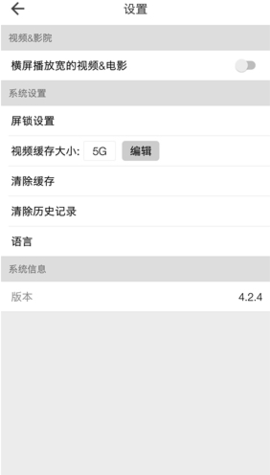

beautybox绿盒子到底值不值得掏钱——一个付费用户的账本
绿盒子作为影视聚合工具，免费版和付费版的边界在哪？轻度用、主力用、重度用三档用户各算一笔账，看完就知道你属于哪一类。
它到底值不值得掏钱？
这是我用了三个月绿盒子之后，在某个凌晨三点对着手机缓存目录发呆时冒出来的问题。作为一个几乎不碰付费软件的人，我得承认绿盒子确实有几次差点让我掏出钱包——但最终我忍住了，而且忍得有道理。把这笔账掰扯清楚，给同样在犹豫的朋友一个参考。
先搞清楚：绿盒子免费版到底给了你什么
绿盒子是一款安卓端的影视聚合应用，在beautybox官网上能看到它的完整介绍。安装包从官方下载拿的话只有 4.5MB，体积小到让人怀疑是不是个空壳。但装上之后会发现，它聚合了多家影视源，支持在线播放、离线缓存、DLNA 投屏到大屏——这些功能全部在免费版里就能用。
免费版的核心功能清单：
- 多源聚合搜索，一部片子搜出来十几个播放源，某个源挂了换一个就行
- 离线缓存，一部电影几百 MB 到 1.5GB，攒几部占几个 G 存储
- DLNA 投屏到电视，手机和电视连同一个 Wi-Fi 就能投
- 基础的收藏、续播、历史记录
- 设置页里可以调整缓存上限、清理缓存文件
想搞清楚这些设置项具体怎么调、投屏失败了怎么排查，beautybox文档里写得比我清楚多了。这些已经覆盖了绝大多数人的基本需求——找片、看片、缓存到手机慢慢看、投到电视上爽。我身边至少有五六个朋友装了绿盒子，全用的免费版，没有一个主动提过"想付费"。
那付费版多了什么？坦率说，绿盒子在免费版和付费版之间的界限并不像某些订阅制工具那样画得清清楚楚。公开收录页和推广页能找到的付费相关描述相当有限，能确认的方向大概是这些：
- 去广告或减少广告位
- 解锁更高清晰度的片源（部分源免费版可能只给到 720P，付费开放 1080P/4K）
- 缓存空间上限放宽（免费版可能默认 2GB 上限，付费可以开到 5GB 甚至不设限）
- 优先连接速度或专属线路（聚合源的稳定性和加载速度）
- 注册码/积分制的解锁机制
具体是月付、年付还是买断，我没找到明确的定价表。但从同类工具的价格区间来看，影视聚合类应用的付费档位一般在 15-30 元/月 或 99-199 元/年 这个量级，买断制的话大约 299-499 元。按这个区间来算时间账不会偏得太离谱。
分三类人算账
算账的核心公式很简单：付费成本 ÷ 省下的时间或增加的体验 = 每单位时间成本值不值。
轻度用户：每周看片 ≤ 5 小时
典型画像：通勤地铁上刷两集剧、睡前看部电影、周末偶尔追个新番。
免费版够不够用？完全够。轻度用户最不需要担心的就是缓存空间——一周看的片子加起来撑死一部电影加三集剧，1-2GB 缓存上限绰绰有余。广告？插播几秒跳过就行，免费视频哪个没广告。清晰度？手机屏幕上 720P 和 1080P 的差异用肉眼分辨不出来，除非你贴在屏幕上看像素点。
付费后的时间成本：假设年付 100 元，分摊到一年 365 天，每天不到三毛钱。但这三毛钱能换来什么？对你来说，免费版没让你卡住过——没因为缓存不够删片、没因为广告卡到烦躁、没因为清晰度差想砸手机。付费只是"可以更舒服一点"，不是"不付就没法用"。
结论：轻度用户永远不用付。把省下的钱留着给视频网站的会员加一两部正版片，或者喝杯奶茶，都比给聚合工具付费值。
主力用户：每周看片 5-15 小时
典型画像：下班回家每天一部电影或两集剧、周末投到电视上看个两三个钟头的番或综艺、缓存好几部出差路上慢慢看。
免费版够不够用？基本够，但开始有摩擦。主力用户会遇到的典型痛点：
- 缓存上限 2GB 有点紧——你想缓存一部 1.5GB 的电影再加两集 200MB 的剧，就满了，得手动清旧缓存
- 投屏时偶尔卡顿——Wi-Fi 信号一弱就断，重连要等十几秒
- 部分 4K 片源免费版可能解锁不了
付费后的时间成本：年付 100 元 ÷ 每周 10 小时 ≈ 每小时 2 毛钱。这两毛钱换来了什么？缓存上限放宽到 5GB 意味着你可以同时缓存三四部片不用天天清，投屏稳定性提升意味着少了中途断连重开的烦躁，高清晰度片源在电视上投出来的观感提升确实能感觉到。
关键问题：这些摩擦值不值得花这笔钱？主力用户是最纠结的一档——因为他们确实能感觉到免费版的局限，但这些局限又没严重到"不付就没法看"。我的建议是：先忍两个月再决定。忍的这两个月里记一下你因为缓存不够删了几次片、因为投屏断连烦躁了几次、因为清晰度不够换了几次源。累计下来如果超过十次让你想骂娘的时刻，那就值得付。否则继续免费。
结论：主力用户看摩擦频率，超过十次再付。
重度用户：每周看片 ≥ 15 小时
典型画像：家里电视常年开着绿盒子、一天能刷四五集剧、缓存目录常年保持满状态、对清晰度和加载速度有明确要求。
免费版够不够用？明显不够。重度用户每天都在跟缓存上限打架——你想缓存一整季番剧（12 集，每集 300MB）就得 3.6GB，免费版 2GB 根本装不下。投屏是重度用户的核心场景，任何卡顿和断连都是零容忍的体验破坏。高清片源的差异在电视大屏上被放大了好几倍，720P 和 4K 之间的差距是肉眼可见的模糊和清晰。
付费后的时间成本：年付 100 元 ÷ 每周 20 小时 ≈ 每小时 1 毛多钱。这 1 毛多钱换来的是：不用再纠结删哪部片、投屏顺滑不中断、大屏上真 4K 的观感、广告少到几乎感觉不到。这个账太好算了——每小时花一毛钱换回流畅的体验，在消费升级的语境里这简直是捡漏。
但这里有个反常识的补充：重度用户应该认真考虑替代方案，而不是直接付费。为什么？因为你花在影视上的时间和金钱加起来，已经够你买一到两个正版视频平台的年会员了——而正版平台提供的内容质量、字幕精度、更新速度、观影体验，是聚合工具根本比不了的。
结论：重度用户要么闭眼付绿盒子，要么加一点预算转正版订阅——但别在中间地带纠结。
替代方案：不付这笔钱的其他路
绿盒子付费不是唯一的选择。以下几条路适合不同情况的朋友：
路线一：用同类免费聚合工具。影视聚合赛道有不少竞争者，有的免费版给的空间更大、有的完全没广告、有的片源侧重不同。花半小时搜搜同类应用，可能找到一个免费版就满足你全部需求的替代品。缺点是聚合工具的生命周期普遍不长——某个源挂了、应用被下架、开发者跑路，都是家常便饭。
路线二：降低使用频率。听起来像废话但其实有效。很多主力用户的"缓存不够"问题，本质上是因为你缓存了太多"以后可能会看"的片子。真正看完的有几部？把缓存目录里那些躺了三个月的片子删一删，2GB 上限突然就够了。投屏卡顿的问题，换个更靠近路由器的位置坐就行——不是非得花 100 块才能解决。
路线三：混订阅。一个正版平台的年会员（比如某奇艺或某讯，大约 100-200 元/年）+ 绿盒子免费版。正版平台看热门剧和新片，绿盒子看老剧和冷门资源，两边互补。这比单独给绿盒子付费性价比高得多，因为正版平台的体验是聚合工具给不了的——至少你不用担心看着看着源就挂了。
路线四：等等再看。绿盒子这类应用迭代很快，免费版的功能边界可能随时调整。也许下个月某个版本更新就把缓存上限提到了 5GB，也许下个月广告机制改了，也许开发者放出了限时免费的注册码。如果你现在不是急着用，等一两个月再观察也不亏。
我的结论
把三档用户拉到一张表里：
| 用户类型 | 每周看片时长 | 付费决策 | 核心理由 |
|---|---|---|---|
| 轻度用户 | ≤ 5 小时 | 永远免费 | 免费版零摩擦，付费纯属浪费 |
| 主力用户 | 5-15 小时 | 先忍两个月再决定 | 摩擦不够频繁就不值当花钱 |
| 重度用户 | ≥ 15 小时 | 闭眼付或转正版 | 中间地带最难受，要么花钱要么换方案 |
最后说一下我自己的选择：忍下来了，没付费。我属于轻度偏主力那一档，每周看片大概 6-8 小时，缓存上限的问题用"看完删"解决，投屏卡顿用"换个靠近路由器的位置"解决，清晰度差异在我那台 43 寸电视上确实有但没到让我抓狂的程度。一年 100 块，我选择留着给奶茶加珍珠。
但如果你是重度用户，或者主力用户里那类"已经跟免费版摩擦超过十次"的朋友——别犹豫了，花这点钱换个舒服。毕竟看片这件事，舒服比什么都重要。

这套资料我在三个仓库都存了一份，国内访问慢的话可以按需换源：GitHub 上是原版，Gitee 和 GitCode 各自同步了一份完整目录，搜 APP 分类下的 beautybox 就能找到。